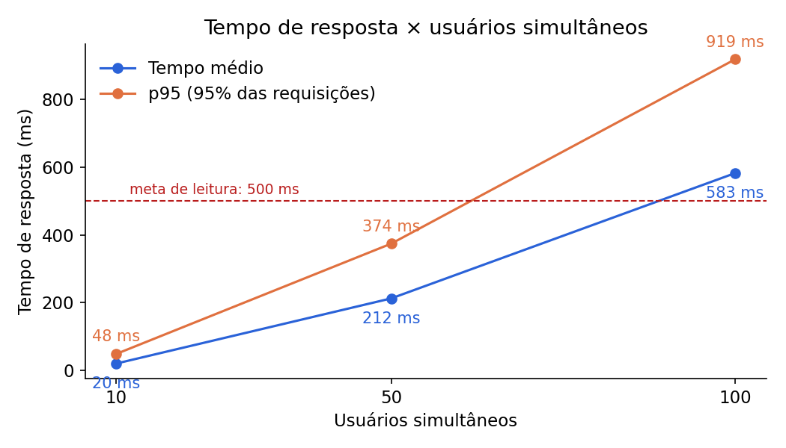
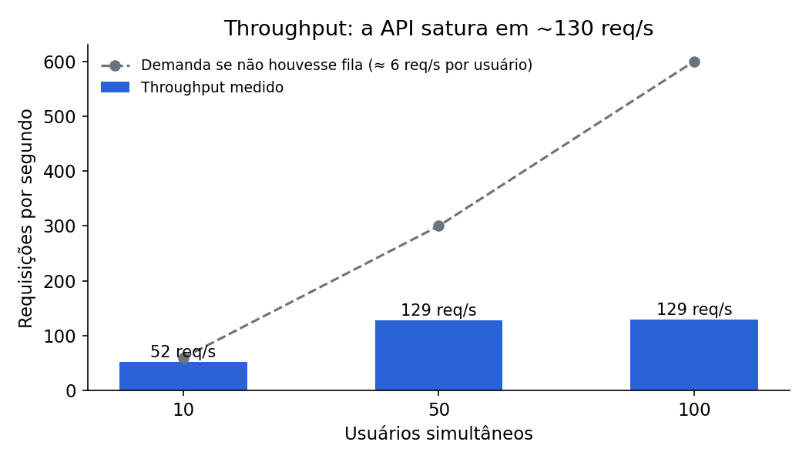
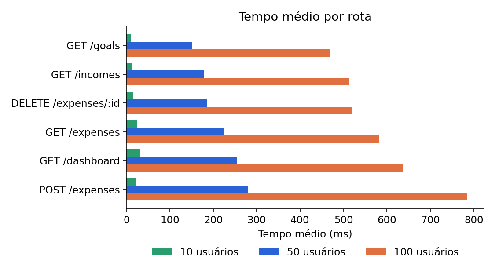
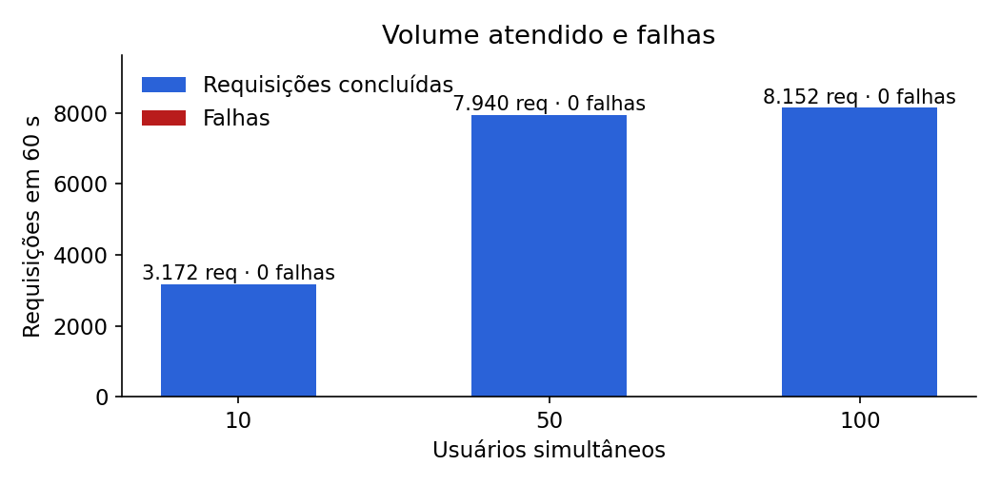

Relatório de Desempenho e Carga — FinUp
PIM · Qualidade de Software · Teste executado em 09/11/2026
Integrantes: Gustavo Nascimento Millan · Lucas Valério Banhara Copeski · Lucas Theodoro Ribas · Lucas Zezi Razzante · Paulo Henrique do Santos Xavier · Rebeca Mendes de Souza · Thiago Silva Rodrigues
1. Objetivo e método
Medir como a API do FinUp se comporta com 10, 50 e 100 usuários usando o sistema ao mesmo tempo e responder às perguntas da atividade com os dados gerados. O FinUp é um aplicativo (Android, iOS, Web e Windows); quem recebe todos os acessos é a API REST (Node.js + Express + SQLite). Por isso a carga foi aplicada nela.
| Item | Detalhe |
|---|
| Usuários virtuais | 10, 50 e 100, um cenário de cada vez, 60 segundos cada; chegada distribuída nos 2 primeiros segundos |
| Caminho de cada usuário | Login uma vez; depois, em ciclo: GET /incomes, GET /expenses, GET /goals, GET /dashboard, POST /expenses (nova despesa) e DELETE /expenses/:id, com 1 s de pausa entre ciclos — o mesmo que o app pede ao abrir e ao lançar uma despesa |
| Dados | Banco SQLite com 51 contas e 51.000 lançamentos (1.000 por conta), gerados com semente fixa; os 100 usuários se distribuem entre as 51 contas |
| Falha | Erro de rede, tempo esgotado (15 s) ou código HTTP diferente do esperado (200, 201 ou 204) |
| Ambiente | Windows 11 · Intel i5-9400F (6 núcleos) · 16 GB · Node.js 24.11 · API e gerador de carga na mesma máquina |
| Ferramenta | Script próprio em Node.js (carga.js) que registra rota, status e tempo de cada requisição; gráficos em matplotlib |
2. Resultados comparativos
| Usuários | Requisições | Falhas | Tempo médio | Mediana | p95 | Máximo | Throughput |
|---|
| 10 | 3.172 | 0 (0%) | 19,5 ms | 16,7 ms | 47,8 ms | 185,7 ms | 52,3 req/s |
| 50 | 7.940 | 0 (0%) | 212,3 ms | 207,6 ms | 374,2 ms | 560,5 ms | 128,7 req/s |
| 100 | 8.152 | 0 (0%) | 582,8 ms | 586,3 ms | 919,4 ms | 1.465,4 ms | 129,4 req/s |
p95 = 95% das requisições terminaram em até esse tempo. Valores incluem o login. Dados brutos: carga-10/50/100-usuarios.json.


3. Respostas às perguntas
1. Qual foi o tempo médio de resposta das requisições?
19,5 ms com 10 usuários, 212,3 ms com 50 e 582,8 ms com 100. Para comparação, uma requisição sozinha, sem concorrência, leva de 1 a 10 ms nessas rotas (teste de volume, cenário de 1.000 lançamentos).
2. Houve alguma falha? Se sim, quantas?
Não. As 19.264 requisições dos três cenários terminaram com o código esperado: 0 erros de rede, 0 tempos esgotados e 0 respostas de erro. O sistema fica mais lento sob carga, mas não quebra.
3. Qual foi o throughput?
52,3 req/s (10 usuários), 128,7 req/s (50) e 129,4 req/s (100). De 50 para 100 usuários o throughput praticamente não muda (+0,5%): a API atingiu sua capacidade máxima, de cerca de 130 requisições por segundo.
4. Como o sistema se comportou com 10 usuários simultâneos?
Muito bem. Tempo médio de 19,5 ms, p95 de 47,8 ms e nenhuma rota acima de 100 ms no p95 (exceto o login, 186 ms, por causa da criptografia da senha). O throughput (52,3 req/s) acompanhou a demanda dos usuários (cerca de 54 req/s): não houve fila. Todos os critérios ficaram dentro da meta de 500 ms.
5. Foi identificado algum gargalo ou lentidão?
Sim, três:
- Fila única no banco. A API usa uma só conexão com o SQLite. Com 100 usuários, até rotas leves esperam a vez: GET /goals, que sozinho leva cerca de 2 ms, levou em média 467 ms. É por isso que o throughput para em ~130 req/s.
- Rotas mais pesadas (tempo médio com 100 usuários): POST /expenses 785 ms (gravações esperam as leituras), GET /dashboard 638 ms (5 consultas que percorrem as tabelas inteiras, sem índice) e GET /expenses 582 ms (devolve a lista inteira, sem paginação).
- No aplicativo (teste de volume, mesmo relatório): o Histórico com o filtro “Tudo” levou 2,2 s com 1.000 lançamentos e 37 s com 10.000; cada troca de aba baixa todos os lançamentos de novo (1,8 s com 10.000).
6. Comparação entre 10, 50 e 100 usuários
Ver a tabela da seção 2, os gráficos e a análise crítica a seguir.
Tempo médio por rota

4. Análise crítica
- De 10 para 50 usuários, a demanda cresceu 5 vezes, mas o throughput só 2,5 vezes (52 → 129 req/s) e o tempo médio 11 vezes (19 → 212 ms). A API passou do ponto de saturação nesse intervalo. Pela capacidade medida (~130 req/s) e pelo pedido de cada usuário (~6 req/s), o limite fica em torno de 20 a 25 usuários ativos ao mesmo tempo.
- De 50 para 100 usuários, o throughput ficou igual (+0,5%) e o tempo médio quase triplicou (212 → 583 ms). Quando os pedidos dobram e a capacidade não aumenta, o que dobra é a fila.
- Meta de 500 ms (p95). Com 10 usuários (48 ms) e 50 usuários (374 ms) a meta foi atendida. Com 100 usuários ela foi ultrapassada (919 ms), e a resposta mais lenta chegou a 1,5 s.
- Robustez. O resultado positivo é a ausência total de falhas: mesmo saturada, a API respondeu tudo corretamente, sem perder ou recusar requisições.
- Coerência com os outros testes. As causas apontadas aqui são as mesmas registradas no teste de volume e na análise estática: falta de índices (DEF-06), resumo lento com acessos simultâneos (DEF-07), recarga completa no app (DEF-09) e conexão única com o banco (DEF-16).
Volume atendido e falhas

5. Melhorias recomendadas
| Melhoria | Efeito esperado |
|---|
| Índices (user_id, date) em receitas e despesas | Consultas do resumo e das listas deixam de percorrer a tabela inteira |
| Resumo em uma única consulta (ou com cache por mês) | Reduz o custo do GET /dashboard, a rota de leitura mais lenta |
| Paginação e filtro por mês nas listas; app sem recarregar tudo a cada aba | Menos dados por requisição e muito menos requisições por usuário |
| SQLite em modo WAL e gravações fora da fila de leitura | Leituras e gravações deixam de esperar umas pelas outras |
| Rodar a API em mais de um processo (cluster/PM2) ou, em produção, usar um banco cliente-servidor | Aumenta a capacidade além de ~130 req/s |
6. Limitações do teste
- O gerador de carga e a API rodaram na mesma máquina, então disputam o processador; em servidores separados a capacidade tende a ser um pouco maior.
- Rede local (sem latência de internet) e cenários de 60 s; não foram feitos testes de longa duração.
- Os 100 usuários virtuais usaram 51 contas (até 2 usuários por conta).
7. Conclusão
Com 10 usuários, o FinUp responde em ~20 ms e atende a todas as metas. A API satura em cerca de 130 requisições por segundo, o que corresponde a uns 20 a 25 usuários ativos ao mesmo tempo. Acima disso o tempo cresce rapidamente: média de 212 ms com 50 usuários e de 583 ms com 100, quando o p95 passa da meta de 500 ms. Em nenhum cenário houve falha. O gargalo principal é a fila única de acesso ao banco, agravada pela falta de índices e pelas listas sem paginação. As melhorias da seção 5 atacam diretamente essas causas e podem ser verificadas repetindo este mesmo teste.
Evidências e scripts: testes/05-desempenho/carga/ (carga.js, executar-carga.sh, graficos-carga.py, evidencias/). Para repetir: bash testes/05-desempenho/carga/executar-carga.sh.